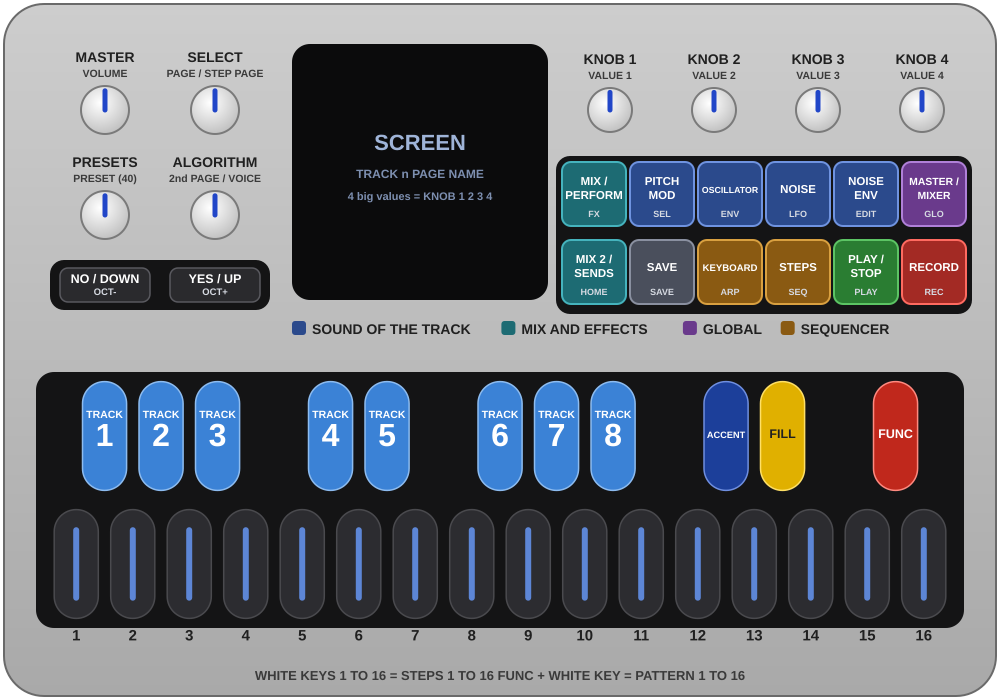
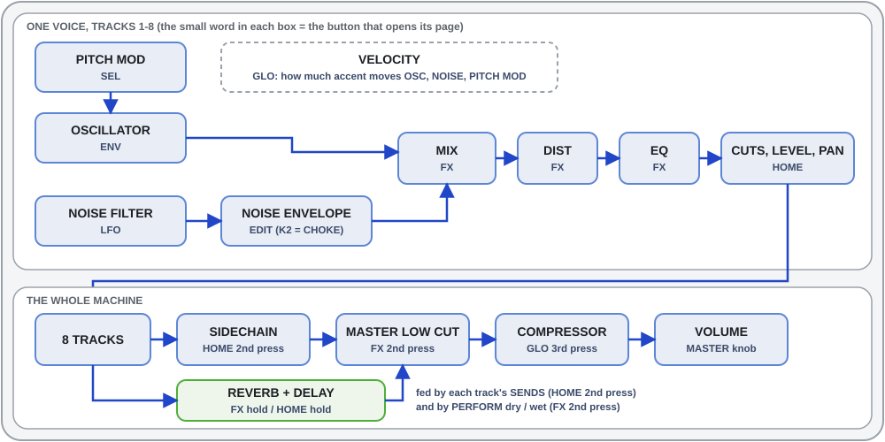

FM1 TONIC
FM1 TONIC turns the M-VAVE FM-1 into an 8-track drum synthesizer inspired by Microtonic, a trademark of Sonic Charge. The sound comes from FM1 TONIC's own engine: it acts in a similar way, but it is not the same engine, and FM1 TONIC is not connected with Sonic Charge. Eight drum voices, each synthesised from scratch (nothing is sampled), a sequencer with accents and fills (patterns of 1 to 64 steps, 16 patterns per project), a mixer, reverb, delay and a master compressor. 40 project slots keep your work: 8 factory presets and 32 of your own.
Features
Sound
- 8-voice drum synthesizer: every track has its own oscillator, pitch mod, noise, mix, EQ and distortion.
- Per-track level and pan, and per-track reverb send and delay send (plus low cut and high cut in the Enhanced engine).
- Enhanced or Classic engine (Classic = only the core sound settings, without the FM1 TONIC extras).
- Track randomizer: a new random sound for the selected track.
- Choke groups (for example closed and open hat).
- Sidechain compressor: any track can duck the others.
Sequencer
- 64-step sequencer, 16 patterns per project. Fixed length 8, 16, 32 or 64 steps, or a free length of 1 to 64.
- Song mode.
- Global accent and per-track accent, fill with retrig (2x, 4x, 8x), and trig % (chance) on every step.
- Parameter lock (limited: 3 knobs per track in each pattern).
- Record automation (limited: 3 knobs per track).
- Live recording, quantized or unquantized. Swing, quantization and tempo.
- Keyboard (ARP): play a track like a keyboard and record the notes into the steps (a piano roll).
- Copy and paste of a pattern, of a track, and of a pattern on the fly while the song plays.
- Mute and solo.
- Undo and redo.
Mixing and performance
- Master mixer: level and pan of every track (the red dot marks the centre).
- Master compressor.
- Performance page: 2 master effects (reverb and delay), a low cut and ALL FX OFF.
- Memory page: how full the project memory is.
Projects and saving
- 40 project slots: 8 factory presets and 32 of your own.
- Autosave and quick save.
- Name project: GENERATE or MANUAL. Rename project.
- Back up and restore from the web page. Export and import of
.mtpresetpresets.
Screen, lights and settings
- 4/4 LED indicator (white keys 1, 5, 9 and 13), key light on or off.
- Zoom knobs (the big dial when a knob turns), colour theme.
- Output volume NORMAL or LOUD. USB audio.
MIDI
- MIDI channel selector, notes out on or off, clock out on or off.
- Control changes (CC): 26 sound parameters, per selected track or per MIDI channel.
- Remote panel: play the FM-1's own keys from an external keyboard or a Digitakt.
1The panel

- Knobs. MASTER is the volume. SELECT turns pages (in a list: up and down). PRESETS picks one of the 40 presets. KNOB 1 to 4 set the four values of the page on the screen (the one you turn is enlarged). ALGORITHM turns to a second page or picks a voice, depending on the page (the page tables say which). A small blue triangle in a bottom corner of the screen means there is a second page behind ALGORITHM: right triangle = turn ALGORITHM right, left triangle = turn it left to go back.
- Black keys. 1 to 8 are TRACK 1 to 8, 9 is ACCENT, 10 is FILL, 11 is FUNC.
- White keys 1 to 16 are the 16 steps of the selected track. A pattern can have up to 64 steps, shown 16 at a time (see SEQ).
- OCT- / OCT+ move the selected track's pitch one octave (on ARP: the keyboard's octave). In a question OCT+ = YES, OCT- = NO.
Reading the page tables. Each button has one table, one row per page. Plain text is what the control does by itself. Red is what it does with FUNC held, orange is what it does with FILL held (the Digitakt way).
What works on every page (the tables below do not repeat it):
| Keys | What it does |
|---|---|
| Black key 1 to 8 | Selects the track and plays it (also while playing). |
| White key 1 to 16 | The steps: tap = trig on, tap again = off. A pattern has up to 64 steps, shown 16 at a time. |
| White key held + ACCENT / FILL | That step gets an accent / a fill (again = off). |
| ACCENT or FILL held | The trigs of the track that carry that accent / fill blink on the white keys (the other trigs stay lit). |
| FUNC + black key 1 to 8 / FILL + black key 1 to 8 | Mutes the track / solos it (again = back). |
| FUNC + white key | Changes the pattern (while playing: at the end of the bar). |
| FUNC + ACCENT / FUNC + FILL / FUNC + PLAY | Copies the pattern / pastes it (it asks PASTE PATTERN?) / clears it (it asks CLEAR PATTERN?). OCT+ = yes, OCT- = no. |
| FUNC + black key 1 to 8 held, then ACCENT / FILL / PLAY | Copies that track's sound / pastes it / clears that track's pattern (it asks). |
| FUNC + SEQ | Song mode on / off (it asks). |
| FUNC + ARP | Deletes the song (it asks). |
| FUNC + SAVE / FUNC + HOME | Quick save into the loaded place / renames the project. |
| FUNC + REC | QUANTIZED REC / UNQUANTIZED REC. |
| ENV + a knob | That knob back to its default. |
| GLO + ACCENT / GLO + FILL | Undo / redo (on every page). |
| REC + PLAY, then keys and knobs | Live recording: black keys 1 to 8 write trigs, the knobs write automation (3 knobs per track). |
| PLAY | Starts and stops the pattern. |
| OCT- / OCT+ | The track's pitch one octave down / up. In a question: NO / YES. |
Exceptions: on PERFORM, MUTE / SOLO and the pattern page the black keys are mute buttons; on ARP every key is a keyboard key. They are all in the next list.
Where the keys do something else. The keys of the panel (black keys 1 to 8 = tracks, ACCENT, FILL, FUNC, white keys 1 to 16 = steps) and the shortcuts above are true on every page of this manual, except on the pages in this list, where the keys have another job:
| Page | What the keys do there |
|---|---|
| ARP | Every key, white and black, is a keyboard key that plays the selected voice. |
| PERFORM, MUTE / SOLO, PATTERN (SEQ, 2nd press) | Black keys 1 to 8 are mute buttons (solo buttons in SOLO mode), not track select. White keys 1 to 16 pick the next pattern. FUNC and FILL, tapped, switch between MUTE and SOLO mode. |
| DUCK (SENDS, ALGORITHM right) | Black keys 1 to 8 choose which tracks are ducked. |
| CHOKE (EDIT, ALGORITHM right) | Black keys 1 to 8 choose which tracks are in the choke group. |
| SONG and PATTERNS screens (song mode) | White keys 1 to 16 write a pattern into the bar. FILL deletes the bar. |
| Copy-paste mode (after FUNC + ACCENT) | White keys 1 to 16 are the places to paste into. |
| FUNC held | White keys 1 to 16 are patterns 1 to 16; the keys light where a pattern or a track has notes. |
Things that exist only on some pages.
| Page | Keys | What it does |
|---|---|---|
| Sound pages: MIX 1, SEL, ENV, LFO, EDIT, VEL | White key held + knob 1 to 4 | P-lock: that step gets its own value of the knob. White key held + SAVE + the same knob removes it. A track holds 3 locked knobs per pattern. |
| Every page but PERFORM, HOME, SONG, COMP and the lists | White key held + SELECT | That step's chance: 5 to 100 %, then 1:2, 2:2, 1:3 ... 8:8. |
| ENV | OCT- / OCT+ | The oscillator frequency one octave down / up. |
| EDIT | FUNC + knob 2, FUNC, tap EDIT, EDIT or LFO held + FUNC + ACCENT / FILL / PLAY | Joins / leaves the choke group; DELETE AUTOMATION?; copies / pastes / resets this page of the track. |
| SEQ | Knobs, SELECT, ALGORITHM, FILL + SEQ | See the SEQ table in chapter 3. |
| GLO > VEL | FUNC + knob 4 | A new random sound for the selected track. |
| GLOBAL (HOME, 3rd press) | Knob 4 (or HOME held + SELECT) | The tempo. |
2Signal path

Every track makes its sound from scratch with the FM1 TONIC drum engine: a pitch modulator and oscillator, a noise filter and envelope, a mix, a distortion and an EQ, then the track's cuts, level and pan; the 8 tracks go through the sidechain, the master low cut and the compressor to MASTER, with reverb and delay as send effects. Chapter 8 explains every setting.
Enhanced and classic. GLO > settings > Tonic Engine is enhanced by default. In classic the FM1 TONIC extras (the track cuts, the sends, the sidechain) are greyed out and do nothing, so the sound uses only the settings a .mtpreset file can carry. Their values are kept and come back with enhanced. Level and pan stay available in classic. The mode is global, not saved in a preset.
3Pages, button by button
A page with track values (knobs 1 to 4 of the sound pages) belongs to the selected track: change track with a black key 1 to 8 and the values change. EDIT or LFO held + FUNC + ACCENT / FILL / PLAY copies, pastes and resets this page of the track (track pages only).
FX
Press = MIX 1 → PERFORM → MIX 1. Hold (half a second) = REVERB. From another button's page, FX returns to the last FX page you left.
| Page | Knob 1 · 2 · 3 · 4 | Also on this page |
|---|---|---|
| MIX 1 (1st press) | OSC / NOISE mix · EQ FREQ (20 Hz-20 kHz) · DIST · EQ GAIN (64 = flat) | White key held + knob: p-lock. SAVE + knob: forgets that lock or motion. |
| PERFORM (2nd press) | REVERB D/W · DELAY D/W (0-100 %, 0 at power-on) · MASTER LOW CUT (20-663 Hz) · ALL FX (right on, left off) | The big number is the playing pattern. SELECT: next FX pages (stops at the ends). ALGORITHM right: MUTE / SOLO. Black keys 1 to 8: mute. White keys 1 to 16: next pattern. FUNC tap: MUTE mode, or unmute all. FILL tap: SOLO mode, or clear all solos. No p-locks. |
| MUTE / SOLO (PERFORM, ALGORITHM right) | same as PERFORM | Eight boxes instead of the number: blue = the track plays. Black keys 1 to 8 mute (MUTE mode) or add / remove a solo (SOLO mode, several at once). ALGORITHM left: back. |
| REVERB (hold FX) | DECAY · TONE | ALGORITHM right: REVERB 2. |
| REVERB 2 | LOW CUT (of what enters the reverb) · RETURN (level in the mix) | ALGORITHM left: back. |
| DELAY (hold HOME too) | TIME (1/32 ... 1/2, with T and dotted values) · FEEDBACK · TONE · TAPE (first eighth = clean digital, then tape with more wear) | ALGORITHM right: DELAY 2. |
| DELAY 2 | LOW CUT · RETURN · PING-PONG (off / on) | ALGORITHM left: back. |
ALL FX off silences PERFORM's two D/W sends and the master low cut; the tracks' own sends keep working. Mutes and solos are shared by PERFORM and MUTE / SOLO; solos are not saved and end when a preset loads. The effects pages are global (all tracks share them): SELECT walks PERFORM, REVERB, DELAY, REVERB 2, DELAY 2.
HOME
Press = MIX 2 → SENDS → GLOBAL → MIX 2. Hold = DELAY.
| Page | Knob 1 · 2 · 3 · 4 | Also on this page |
|---|---|---|
| MIX 2 | LEVEL · PAN · LOW CUT (20-663 Hz, never off) · HIGH CUT (20 kHz down to 1 kHz) | The two cuts are greyed in classic. |
| SENDS | REVERB SEND · DELAY SEND · SIDECHAIN INPUT (track 1 to 8, big number) · SIDECHAIN THRESHOLD (0-100 %, 0 = nothing ducks) | ALGORITHM right: the DUCK screen (below). Sends work whatever PERFORM's D/W and ALL FX say. |
| DUCK (SENDS, ALGORITHM right) | - | Black keys 1 to 8: blue = ducked, grey = not, purple = the input. The input cannot be ducked. Nothing is ducked until you choose. ALGORITHM left or HOME: back. |
| GLOBAL | QUANTIZATION (1/8 ... 1/32) · SWING · FILL RATE (2x, 4x, 8x) · TEMPO | - |
The duck follows the input track's sound (a long kick ducks for long; a muted input does not duck) and also ducks the tracks' sends. A red dot shows a ducked track, a purple dot the input; the dot pulses each time the input ducks. One sidechain for all tracks, saved with the preset.
SEL, ENV, LFO, EDIT (the voice pages)
All four are track pages: p-locks and chance work on them.
| Button | Knob 1 · 2 · 3 · 4 | Also on this page |
|---|---|---|
| SEL PITCH MOD | SHAPE (DECAY, SINE, RANDOM) · AMOUNT (64 = none) · RATE · - | |
| ENV OSCILLATOR | WAVE (SINE, TRI, SAW) · FREQUENCY (20 Hz-20 kHz) · ATTACK · DECAY | OCT- / OCT+ move the frequency by an octave. |
| LFO NOISE FILTER | MODE (LP, BP, HP) · Q · FREQUENCY · - | |
| EDIT NOISE ENVELOPE | MODE (EXP, LIN, CLAP) · CHOKE button · ATTACK · DECAY | FUNC + knob 2 right: the track joins the choke group; left: leaves. Knob 2 alone only shows a message. ALGORITHM right: the CHOKE screen. FUNC, tap EDIT: DELETE AUTOMATION? (OCT+ yes, OCT- no). |
| CHOKE (EDIT, ALGORITHM right) | - | Black keys 1 to 8: blue = in the group. A hit of one track of the group stops the others at once, like a closed hat stops an open one. ALGORITHM left: back. Saved with the preset. |
DELETE AUTOMATION removes the selected track's p-locks and recorded motion in the playing pattern (other tracks, other patterns and chances stay; undo works). Holding FUNC + EDIT and then pressing ACCENT, FILL or PLAY is the page copy, not a delete.
GLO
Press = VEL → MIXER → COMP → MEMORY → SETTINGS → VEL.
| Page | Knob 1 · 2 · 3 · 4 | Also on this page |
|---|---|---|
| VEL | OSC · NOISE · PITCH MOD (how much velocity moves each) · RANDOM | FUNC + knob 4: the selected track gets a new random sound (the 21 sound settings only). Knob 4 alone only shows a reminder. Track page: p-locks work. |
| MIXER | LEVEL of the four tracks shown | Eight tall sliders; SELECT switches tracks 1 to 4 / 5 to 8 and, as the blue hint on the screen says, cycles level / pan (pan centre = red). Black keys 1 to 8 pick a track and its group. A hit lights its slider. FUNC + black key 1 to 8: mute. A red dot under a slider = ducked, purple = sidechain input. Chance works here. |
| COMP | ATTACK · RELEASE · THRESHOLD · MAKE-UP | Master compressor, ratio 4:1, a needle shows gain reduction. Default: nothing compressed (0.0 dB / 0.0 dB). Kept only by SAVE. |
| MEMORY | - | A battery shows how full the project memory is (patterns, song, motion, ARP notes). Purple from 90 %, FULL at 100 %: a save is then refused. |
| SETTINGS | list (SELECT moves) | Rows: clock out, notes out, Tonic MIDI channel, output level, USB audio, key light, 4/4 LED, colour theme, zoom knob (yes / no), Tonic Engine, name projects, save, autosave, clear pattern, factory reset, performance, cores, about, battery. The non-obvious ones are explained just below. Changes are kept by themselves about a second and a half after you stop touching things (the sequencer must be stopped). |
GLO settings: the ones that are not obvious
Settings are in the GLO list (SELECT moves up and down, ALGORITHM changes the value). The defaults are in bold.
| Setting | Choices | What it does |
|---|---|---|
| OUTPUT | NORMAL / LOUD | LOUD (the factory setting) makes the FM-1's outputs 6 dB hotter (the codec's full scale). NORMAL keeps 6 dB of headroom: use it if the sound is too loud, and watch the compressor and the limiter. |
| USB AUDIO | FOLLOWS KNOB / FULL | FOLLOWS KNOB: the computer receives what the headphones hear, after the MASTER knob. FULL: the computer always receives the full level, and MASTER only changes the FM-1's own outputs (speaker, headphones, line out). Use FULL to record at full level and still monitor quietly. |
| 4/4 LED | OFF / ON | ON (the factory setting): white keys 1, 5, 9 and 13 glow faintly to mark the four beats of the bar (not on PERFORM). |
| ZOOM KNOB | YES / NO | YES: the knob you turn is enlarged over the screen. NO: it is only highlighted, so the whole page stays visible. The SONG screen never zooms. |
| NAME PROJECTS | GENERATE / MANUAL | GENERATE makes up the name of a saved project (ALGORITHM = another one). MANUAL: the name screen is a letter editor (see chapter 5). |
| TONIC ENGINE | ENHANCED / CLASSIC | CLASSIC greys out and silences the FM1 TONIC extras (track cuts, sends, sidechain) so the sound uses only the settings a .mtpreset file can carry (chapters 2 and 8). |
| 2ND CORE | ON / OFF | The FM-1's chip has two cores and Tonic shares the sound rendering between them. It takes effect at the next power-on. If the FM-1 ever crashes with two cores it switches itself to OFF; turn it back ON here. |
SEQ and ARP
| Page | Knob 1 · 2 · 3 · 4 | Also on this page |
|---|---|---|
| SEQ (1st press) | FIXED LEN (8, 16, 32, 64) · AUTOSCROLL · FREE LEN (1 to 64) · SWING | White keys: the steps. SELECT: the step pages (16 at a time; AUTOSCROLL off). ALGORITHM: the voice (1 to 8, then AC = the global accent). Hold a step + ACCENT / FILL: flags (accent = dark blue, fill = yellow, both = green). FUNC + SEQ: song mode on / off (confirm with OCT+). FILL + SEQ: the SONG screen. |
| PATTERN (SEQ, 2nd press) | SONG ON / OFF | Black keys 1 to 8 mute, white keys 1 to 16 pick the next pattern. A dark key = empty pattern, low light = has notes, slow blink = the current one, fast blink = the next one (cued). FUNC tap and FILL tap as on PERFORM. SEQ again: back. |
| ARP | FIXED LEN · OCTAVE (also OCT- / OCT+, -3 to +3) · - · - | The SEQ screen, but every key (white and black) plays the selected voice like a keyboard. The C keys (dim) play the voice's own pitch at octave 0. ALGORITHM: the voice. Nothing is recorded. SEQ: back. FUNC + ARP: delete the song (DELETE SONG?). |
Making a pattern longer copies what is there into the new part (8 to 16 copies steps 1 to 8 into 9 to 16); making it shorter only shortens it.
PLAY, REC, SAVE
| Button | What it does |
|---|---|
| PLAY | Play and stop. FUNC + PLAY: clear the pattern (it asks). |
| REC | REC then PLAY: live recording. Every black key 1 to 8 writes a trig of its track at the nearest step; every sound knob you turn is recorded as automation. Not on PERFORM and the pattern page. FUNC + REC: QUANTIZED REC (default) / UNQUANTIZED REC (the hit keeps its exact timing, inside the step); while playing it also switches recording on. |
| SAVE | See chapter 5. FUNC + SAVE: quick save. FUNC + HOME: rename. |
Button combinations
Every combination of buttons and keys, grouped by the button you hold first. Black key 9 is ACCENT, 10 is FILL, 11 is FUNC. Red = FUNC held, orange = FILL held. The last column says where it works. "Every page" means every page except ARP and the two PERFORM pages: on ARP, FUNC, ACCENT and FILL are keyboard keys, and on PERFORM FUNC and FILL are the MUTE and SOLO mode keys, so their combinations do not work there. The one exception is FUNC + PLAY (clear the pattern), which also works on ARP with black key 11 held. GLO + ACCENT / FILL and the combinations made only of buttons and knobs (HOME + SELECT, ENV + a knob ...) do.
FUNC held (black key 11)
| Keys | What it does | Where |
|---|---|---|
| FUNC + black key 1 to 8 | Mutes the track (again = unmute). It acts when you let the key go. | Every page |
| FUNC + white key 1 to 16 | Changes to that pattern (while playing: at the end of the bar). | Every page; not on the SONG screen or in song mode (the song decides) |
| FUNC + ACCENT | Copies the pattern. The screen says PRESS PATTERN TO PASTE / PRESS SEQ TO EXIT, every pattern key blinks (an empty pattern dimmer) and SEQ blinks: press a pattern key and the copy lands there, that pattern becomes the current one. Tap FUNC alone before choosing to stay in the mode for many pastes. SEQ leaves the mode and opens the sequencer page; FUNC + ACCENT again or any other button leaves it too. | Every page |
| FUNC + FILL | Pastes the copied pattern when you let FILL go. It asks PASTE PATTERN? (OCT+ = yes, OCT- = no). | Every page |
| FUNC + FILL held + white key | Pastes the copied pattern into that slot at once (no question). | Every page |
| FUNC + PLAY | Clears the pattern (it asks CLEAR PATTERN?). It does not start the music. | Every page, ARP too (there hold black key 11, a piano key on ARP: PLAY does not start / stop while it is held) |
| FUNC + black key 1 to 8 held, then ACCENT | Copies that track's sound (not its steps). | Every page |
| FUNC + black key 1 to 8 held, then FILL | Pastes the copied sound into that track (mute, volume and pan too; the track is not muted by it). No question. | Every page |
| FUNC + black key 1 to 8 held, then PLAY | Clears that track's pattern (it asks CLEAR TRACK PATTERN?). | Every page |
| FUNC + EDIT or LFO held, then ACCENT | Copies this page of the selected track (only its parameters). | Pages that have track parameters (not GLO, HOME, SEQ) |
| FUNC + EDIT or LFO held, then FILL | Pastes it into the selected track, on the same page. | Pages that have track parameters (not GLO, HOME, SEQ) |
| FUNC + EDIT or LFO held, then PLAY | Resets this page of the track to its power-on values. No question; undo takes it back. | Pages that have track parameters (not GLO, HOME, SEQ) |
| FUNC + EDIT, tapped alone | DELETE AUTOMATION?: removes the selected track's p-locks and recorded motion in the playing pattern (it asks). | Every page |
| FUNC + SEQ | Song mode on / off (it asks: OCT+ = yes). | Every page |
| FUNC + ARP | DELETE SONG?: deletes the whole song and leaves song mode (it asks). | Every page |
| FUNC + HOME | Renames the project and saves it in the same place. | Every page |
| FUNC + SAVE | Quick save into the loaded place. No question. | Every page |
| FUNC + REC | Cycles QUANTIZED REC / UNQUANTIZED REC. While playing it also switches recording on. | Every page |
| FUNC + OCT- / OCT+ | Nothing. | |
| FUNC + knob 2 (turn right / left) | The selected track joins / leaves the choke group. | Only EDIT, NOISE ENVELOPE page |
| FUNC + knob 4 | A new random sound for the selected track. | Only GLO > VEL |
FILL held (black key 10)
| Keys | What it does | Where |
|---|---|---|
| FILL + black key 1 to 8 | Solos that track (another key moves the solo, the same key ends it). | Every page |
| FILL + SEQ | Back to the SONG screen from any page (in song mode; otherwise NOT IN SONG MODE). | Every page |
| FILL, pressed and let go alone | Deletes the bar on the cursor (no question). | Only the SONG screen |
| FILL + a white key held (or FILL first, then white keys) | That step gets a fill (the track plays 2x, 4x or 8x over it); again = off. | Pages where white keys are steps |
| FILL held | The trigs of the selected track that carry a fill blink on the white keys (the other trigs stay lit). | Pages where white keys are steps |
| FUNC + FILL | Paste. See the FUNC list above. |
ACCENT held (black key 9)
| Keys | What it does | Where |
|---|---|---|
| White key held + ACCENT (or ACCENT first, then white keys) | That step gets an accent (loud); again = off. | Pages where white keys are steps |
| ACCENT held | The trigs of the selected track that carry an accent blink on the white keys (the other trigs stay lit). | Pages where white keys are steps |
| FUNC + ACCENT | Copy. See the FUNC list above. |
GLO held
| Keys | What it does | Where |
|---|---|---|
| GLO + ACCENT | Undo. | Every page, ARP too |
| GLO + FILL | Redo. | Every page, ARP too |
HOME held
| Keys | What it does | Where |
|---|---|---|
| HOME + SELECT | The tempo. | Every page |
| HOME held alone (half a second) | The DELAY page. | Every page |
| HOME + white key | Nothing. |
FX held
| Keys | What it does | Where |
|---|---|---|
| FX held alone (half a second) | The REVERB page. | Every page |
ENV held
| Keys | What it does | Where |
|---|---|---|
| ENV + a knob | That knob goes back to its power-on value. | Pages with knobs |
| ENV + white key | The accent of that step on / off. | Pages where white keys are steps |
| ENV + black key 1 to 8 | Plays that track loud. Recording: the step gets an accent. | Every page |
SAVE held
| Keys | What it does | Where |
|---|---|---|
| SAVE + a knob | That knob's recorded motion is forgotten. | Pages with knobs |
| White key held + SAVE + the same knob | Removes that step's p-lock of the knob. | Sound pages |
A white key held (a step)
| Keys | What it does | Where |
|---|---|---|
| White key held + knob 1 to 4 | P-lock: that step gets its own value of the knob (3 locked knobs per track and pattern). | Sound pages: MIX 1, SEL, ENV, LFO, EDIT, VEL |
| White key held + SELECT | That step's chance: 5 to 100 %, then 1:2, 2:2, 1:3 ... 8:8. | Every page but PERFORM, HOME, SONG, COMP and the lists |
| White key held + ACCENT / FILL | Accent / fill flag. | See ACCENT and FILL above |
Transport and others
| Keys | What it does | Where |
|---|---|---|
| REC + PLAY, then keys and knobs | Live recording: black keys 1 to 8 write trigs, the knobs write automation. | Not on PERFORM and the pattern page |
| OCT- / OCT+ | The selected track's pitch one octave down / up. In a question: NO / YES. On ARP: the keyboard's octave. | Every page |
| A button held alone (about a second) | A card says what the button does on this page, its combinations included. | Every button except FX and HOME |
4Playing
- Steps. Select a track, press a white key to put a step on, press it again to take it off. Accent (loud) and fill (the track plays four times over that step): hold the white key and press ACCENT and / or FILL (again = flag off), or hold ACCENT / FILL first and press white keys.
- Patterns. FUNC + white key changes the pattern. FUNC + ACCENT copies, FUNC + FILL pastes (hold FILL and press a white key to paste into that slot), FUNC + PLAY clears. Pasting the pattern asks PASTE PATTERN? (OCT+ = yes, OCT- = no) and clearing asks CLEAR PATTERN?. With a black key 1 to 8 held as well, they copy, paste and clear that track only; pasting a track's sound or a page, pasting with FILL and a white key, and the copy-paste mode paste at once, with no question.
- Copy-paste on the fly. After FUNC + ACCENT the whole screen says PRESS PATTERN TO PASTE and PRESS SEQ TO EXIT in big blue letters. Every pattern key blinks (a pattern with notes blinks bright, an EMPTY pattern blinks dimmer, the copied one stays lit) and the SEQ button blinks too. Press a pattern key and the copy lands there, that pattern becomes the current one, and the mode ends. To paste in many places, tap FUNC alone before choosing: the mode stays and the current pattern does not change. To leave the mode press SEQ: it opens the sequencer page, not the pattern page (the next SEQ press is normal again). Any other button leaves it too, and so does FUNC + ACCENT again (the screen says COPY MODE OFF). Hold FUNC + ACCENT and press a white key = that pattern is the copy. Not available on PERFORM and the pattern page, where FUNC is MUTE mode.
- Mute and solo. FUNC + black key 1 to 8 mutes (again = unmute). FILL + black key 1 to 8 solos that track (another key moves the solo, the same key ends it). Solos are not saved and end when a preset loads. Not on ARP.
- P-locks and chance. Hold a white key and turn a knob on a voice page: that step gets its own value, every other step keeps the sound. While playing, you hear it next time the step comes round. To remove one: hold the step, hold SAVE, turn the same knob. A track holds 3 locked knobs per pattern (the screen says MAX 3 PER TRACK, MOTION FULL when no room is left). Hold a step and turn SELECT: its chance, down from 100 % in 5 % steps, then 1:2, 2:2, 1:3 ... 8:8. While you turn, the chance fills the whole screen (TRIG % and the step), big, so you can read it at once.
- Chains. A pattern can be flagged to run into the next one when it ends (after pattern 8 comes 1). A flag only counts on a pattern with notes. A preset with chains loads playing through them (SONG ON); SEQ's pattern page knob 1 turns it off and the pattern loops.
- Song mode. FUNC + SEQ, confirm with OCT+ (OCT- = back). With no song yet, the PATTERNS screen opens: white keys 1 to 16 add patterns, OCT- (or FUNC + a white key) takes the last off, OCT+ is OK. PLAY plays one bar per pattern, looping. The same gesture leaves song mode. On the SONG screen (one row per bar) knob 1 = the bar, knob 2 = its pattern, knob 3 = repeats (x1 to x8); white keys write a pattern into the bar on the cursor and move on; FILL, pressed and let go, deletes the bar at once (the last bar deleted = the song is deleted and song mode ends). FUNC + ARP deletes the whole song.
5Presets and saving
Turn PRESETS through the 40 places: 01 to 08 are factory presets, 09 to 40 are yours (an empty place loads with the sounds of a factory preset and no pattern: 09 sounds like 01, 10 like 02, and so on in rotation). A question asks first: OCT+ loads it, OCT- keeps your sound. Loading is refused while playing.
- SAVE asks SAVE HERE? with the loaded place. OCT+ saves there and keeps the name. ALGORITHM picks another place (1 to 40; amber shows who would be replaced). OCT- goes to CHOOSE SLOT, then the slot screen, then the name screen (ALGORITHM = another made-up name; OCT+ saves). HOME leaves without saving. If nothing was loaded since power-on, SAVE starts at CHOOSE SLOT.
- FUNC + SAVE quick-saves into the loaded place without asking for a slot, also while playing. An empty place saves at once as UNTITLED 01, 02 ...; a full one asks OVERWRITE SLOT? (OCT+ yes).
- FUNC + HOME renames the loaded project (ALGORITHM = another name, OCT+ saves, OCT- or HOME cancels). With NAME PROJECTS set to MANUAL (GLO settings) the name screen becomes a letter editor: knob 4 cycles the characters, OCT+ (the screen says OK) takes the letter, OCT- deletes the last one, then press SAVE (8 letters at most; the screen shows PRESS SAVE and TURN KNOB 4 in big letters).
- What is saved. With AUTOSAVE ON, your working project is saved 4 seconds after you stop touching things, except the compressor, the reverb and the delay: those are kept only by SAVE, inside the preset. PERFORM always starts clean at power-on (D/W 0 %, master low cut 20 Hz, ALL FX on). AUTOSAVE is OFF at the factory: press SAVE (or FUNC + SAVE) to keep your work. The settings are still kept by themselves. Turn AUTOSAVE ON in GLO > SETTINGS if you want the project kept by itself. Factory settings: clock out and notes out off, Tonic MIDI channel 10, remote MIDI channel off, CC mode off (CC CH BASE 1-8), output LOUD, USB audio follows knob, 4/4 LED on, theme TONIC, zoom knob yes, name projects GENERATE, Tonic Engine ENHANCED, 2nd core ON. A new unit or a FACTORY RESET gets them; a unit that already holds a saved project keeps its own settings.
6Lights, MIDI and USB
- Lights. PLAY lights on every 4th step (red while recording). REC: off when not recording; steady while stopped (quantized) and blinking with the beat while playing; two fast and one slow blinks for unquantized. The button of the current page is lit. White keys show the selected track's steps (the playing step flips); 1, 5, 9 and 13 can glow faintly (GLO > 4/4 LED). Black keys 1 to 8: the selected track bright (blinking when muted), tracks with notes dim, and while playing a track's key blinks for each of its hits (not on ARP). With FUNC held the keys show which patterns and tracks have notes.
- MIDI. Over USB or the TRS MIDI IN, channel 10 by default plays the voices with General MIDI drum notes in voice order: 36, 38, 41, 45, 50, 37, 39, 42, 46, 49, 51 (velocity = loudness). An incoming clock is followed; Start, Stop and Continue control the pattern. GLO settings: TONIC MIDI CH (or OFF), REMOTE MIDI CH (or OFF, see below), CC MODE and CC CH BASE (control changes, see below), CLOCK OUT (clock and start / stop), NOTES OUT (the pattern as notes).
- Remote panel. GLO > REMOTE MIDI CH (OFF by default) makes a second MIDI channel play the FM-1's own keys. The 27 keys of the panel are the 27 notes from F3 to G5 (MIDI notes 53 to 79, middle C = 60), laid out like a piano keyboard: the first key, F3, is note 53, the last, G5, is note 79. A note on presses the key, a note off lets it go, so a long note holds the key down. Everything a key does on the panel works the same: black keys 1 to 8 select or mute the tracks, white keys 1 to 16 are the steps or the patterns, and the black keys 9, 10 and 11 are ACCENT (note 73), FILL (note 75) and FUNC (note 78). A chord is fine in any note order: ACCENT, FILL and FUNC are always applied first, so FUNC + ACCENT + a white key works when the three notes arrive together. All Notes Off (controller 123) lets every key go. Notes on the remote channel do not play the voices; give it a channel different from TONIC MIDI CH. Notes outside 53 to 79 are ignored.
| Key | Notes |
|---|---|
| White keys 1 to 16 | 53, 55, 57, 59, 60, 62, 64, 65, 67, 69, 71, 72, 74, 76, 77, 79 |
| Black keys 1 to 8 (tracks) | 54, 56, 58, 61, 63, 66, 68, 70 |
| Black key 9 = ACCENT, 10 = FILL, 11 = FUNC | 73, 75, 78 |
Control changes (CC)
A control change turns a knob from outside: the CC number is the parameter (the same numbers for every track) and the track is picked in one of two ways. GLO > CC MODE chooses (OFF by default: nothing reacts to CC until you switch it on):
| CC MODE | What it does |
|---|---|
| OFF | Every control change is ignored. |
| SELECTED | A CC on the Tonic's channel (TONIC MIDI CH) moves the parameter of the selected track. |
| CHANNELS | A block of 8 channels, one per track: the first channel of GLO > CC CH BASE is track 1, the next track 2, and so on (base 1 = channels 1-8). Any track can be moved at any time, with no need to select it first. |
| BOTH | Both together. If the Tonic's channel is inside the block, the block wins on that channel. |
Notes still play the voices on TONIC MIDI CH and the remote panel keeps its own channel, so give the block channels that those two do not use (the default block 1-8 leaves 10 and 11 free). A CC moves the value as the knob does, so the screen, SAVE and the autosave follow; it does not open the big dial, it does not lock a step and it is not recorded. A CC 0-127 is the knob's 0-127; a three-way switch (waveform, filter mode, envelope mode) splits the range in three. In the CLASSIC engine the extras (low cut, high cut, reverb send, delay send) ignore CC like their greyed knobs.
| CC | Parameter | CC | Parameter |
|---|---|---|---|
| 7 | LEVEL | 29 | NOISE FILTER FREQ |
| 10 | PAN | 30 | NOISE ENV MODE |
| 20 | OSC WAVE | 31 | NOISE ENV ATTACK |
| 21 | OSC FREQ | 102 | NOISE ENV DECAY |
| 22 | OSC ATTACK | 103 | MIX |
| 23 | OSC DECAY | 104 | DIST |
| 24 | PITCH MOD SHAPE | 105 | EQ FREQ |
| 25 | PITCH MOD AMOUNT | 106 | EQ GAIN |
| 26 | PITCH MOD RATE | 107 | VELOCITY OSC |
| 27 | NOISE FILTER MODE | 108 | VELOCITY NOISE |
| 28 | NOISE FILTER Q | 109 | VELOCITY PITCH MOD |
| 110 | LOW CUT | 112 | REVERB SEND |
| 111 | HIGH CUT | 113 | DELAY SEND |
Connect a Digitakt or Digitone
The USB socket of the FM-1 and the one of the Digitakt or Digitone are both "device" sockets, so they cannot talk to each other. Use the MIDI OUT (5-pin) of the Digitakt or Digitone into the TRS MIDI IN of the FM-1, with a 5-pin to 3.5 mm TRS MIDI adapter (type A or B: if nothing arrives, try the other type).
- On the FM-1: GLO settings, TONIC MIDI CH = 10 (the voices) and REMOTE MIDI CH = 11 (the panel), or any two different channels.
- On the Digitakt or Digitone: use two MIDI tracks and set their channels to those two numbers. The first plays the voices with the drum notes (36, 38, 41, 45, 50, 37, 39, 42, 46, 49, 51). The second is the remote panel: draw the notes of the table above in its step grid or piano roll.
- A MIDI track plays up to 4 notes in one step, with one length for all of them: the note length is how long the keys are held, so a long note for FUNC with other notes on later steps is FUNC + those keys, and a chord of FUNC + ACCENT + a white key is one step.
- To move the sound from the Digitakt's or Digitone's CC lanes: set GLO > CC MODE = CHANNELS, make one MIDI track per Tonic track on channels 1 to 8 (or from CC CH BASE) and assign its CC lanes to the numbers of the table above; each MIDI track has only so many CC lanes (16 on the Digitakt II, fewer on the first Digitakt), so pick the parameters you want to automate on each track.
- To follow the Digitakt's or Digitone's tempo and start / stop, switch on its MIDI clock and transport out; the FM-1 follows an incoming clock.
Connect a MIDI keyboard
The FM-1 cannot be the host of a USB keyboard. Use a keyboard with a 5-pin MIDI OUT (with a 5-pin to TRS adapter into the TRS MIDI IN), or send a USB keyboard through a computer or a USB MIDI host box to the FM-1's USB socket.
- On the FM-1: GLO settings, REMOTE MIDI CH = the channel the keyboard sends on (1 is the usual one).
- Play the notes F3 to G5 (53 to 79). Hold one key for FUNC (note 78, F#5), ACCENT (note 73, C#5) or FILL (note 75, D#5) and press the others: copy, paste, pattern change, mute and solo work as on the panel. A 49-key keyboard covers the whole panel; on a smaller one, move it with the octave buttons.
- USB audio. The same cable carries what the headphones hear, after MASTER, as a 2-channel 44.1 kHz input, with no driver (GLO > USB AUDIO = FULL sends the full level whatever MASTER says). The first moment after an app opens it can click.
7Install, back up, recover
- Try it: the emulator runs the same code in the browser.
- Install or update: open the web installer in Chrome or Edge, connect the FM-1 with a USB data cable, press Install and do not unplug it while it writes. Another firmware does not keep your project: save it to a file first. "Back to the stock firmware" at the bottom of the same page puts M-VAVE's firmware back. Installing other firmware is at your own risk.
- Back up: the backup page saves the project to an
.x0bfile (Back up), loads it back (Restore: stop the FM-1, then answer RESTORE FROM USB? with SEL), exports presets as.mtpresetfiles, and backs up / restores slots 9 to 40 as.tnpfiles. Command line:python3 tools/x0x_backup.py backup my-song.x0b(alsorestore,info). - If something goes wrong: hold OCT- and OCT+ for five seconds = update mode; hold them while switching on = hardware calibration. After a crash a red CRASH screen restarts the FM-1; if it crashes twice at start it enters SAFE MODE (no sound, USB works: reinstall from the installer; PLAY tries a normal start). If even that fails, the Mac rescue script in
tools/fm1_rescue.shputs M-VAVE's firmware back (it checks every file it writes; running it again is safe). - If an update is refused. If the FM-1 will not change firmware (for example with "Back to the stock firmware"), its update screen shows FAILED, an error number with a short reason (for example ERROR -5 HEAD DIFFERS) and the step where it stopped, for 8 seconds, and then the FM-1 starts FM1 TONIC again. ERROR -5 means the start area (the "head") of your FM-1 is not the one of the firmware you are going to. For this error the screen also shows the first byte that differs, how many bytes differ and both checksums (CRC), for 40 seconds. Note these numbers if you ask for help.
- A custom bootloader. If you put a custom bootloader on the FM-1 (for example m-bootloader, with M-Flasher), going back to M-VAVE's official firmware from the web page can be refused with ERROR -5 HEAD DIFFERS. Put M-VAVE's stock bootloader back first (in M-Flasher: FLASH BOOTLOADER, then STOCK (FROM .FWSC) with the official package), then go back to the stock firmware. On the author's FM-1 this made everything work again.
- Newer FM-1 units. Some newer FM-1s have another flash chip (ID B36014 instead of 856014). FM1 TONIC accepts both, so saving, presets, backup and restore work on them too (not yet tested on a unit with the new chip).
- Full text of the install, backup, rescue and parameter chapters:
docs/reference/MANUAL_full_wip381.md.
8The engine
Each of the 8 tracks is a complete drum synthesizer: the FM1 TONIC engine, nothing sampled. The 8 tracks are identical and each has the same 26 settings, kept per track and saved with the preset. This chapter is the reference for all of them. Where a setting lives is written as button · knob.
pitch mod ─► OSCILLATOR ─┐
├─► MIX ─► EQ ─► DIST ─► LEVEL ─┐
NOISE ─► filter ─► env ──┘ │
┌──────────────────────────────────────────────┘
└─► LOW CUT ─► HIGH CUT ─┬─► PAN ─► master
└─► REVERB / DELAY SENDA hit rings until its envelopes die away. A new hit on the same track cuts the one still ringing (drums are monophonic), and a track in the choke group is cut by the others (3 ms fade).
The knobs are curves, not straight lines. Frequencies, times and Q are exponential: the middle of the knob is not the middle of the value. On the screen frequencies show in Hz or kHz, the pitch mod AMOUNT in semitones (sm) and pan as L / C / R, the OSC/NOISE MIX as two percentages (100.00/00.00 = oscillator only, 00.00/100.00 = noise only); every other knob shows a plain number 0 to 127. Use this table to see what those numbers mean.
| Knob | 0 | 32 | 64 | 96 | 127 |
|---|---|---|---|---|---|
| Frequency (oscillator, noise filter, EQ) | 20 Hz | 114 Hz | 650 Hz | 3.7 kHz | 20 kHz |
| Decay (oscillator, noise, pitch-mod drop) | 10 ms | 57 ms | 0.33 s | 1.8 s | 10 s |
| Attack (oscillator, noise) | 0 | 20 ms | 0.16 s | 1 s | 5 s |
| Filter Q | 0.1 | 1.8 | 33 | 600 | 10000 |
A decay is the time the sound takes to fall to silence (60 dB down).
Oscillator: the tone
| Setting | Where | Range | What it does |
|---|---|---|---|
| WAVE | ENV · knob 1 | SINE, TRI, SAW | SINE is pure and soft, TRI hollow, SAW bright and buzzy. |
| FREQUENCY | ENV · knob 2 | 20 Hz to 20 kHz | The pitch. Kick about 40 to 70 Hz, toms 80 to 250 Hz, snare body 150 to 250 Hz. OCT- / OCT+ move it an octave. |
| ATTACK | ENV · knob 3 | 0 to 5 s | 0 starts at once. Raise it for a swell. The first quarter of the knob is under 20 ms. |
| DECAY | ENV · knob 4 | 10 ms to 10 s | How long it rings: short = click or tick, long = boom. |
Pitch mod: the pitch moves while the sound plays
| Setting | Where | Range | What it does |
|---|---|---|---|
| SHAPE | SEL · knob 1 | DECAY, SINE, RANDOM | The kind of movement (below). |
| AMOUNT | SEL · knob 2 | 64 = none; up to 8 octaves each way | Above 64 the pitch goes up, below 64 down. With DECAY the sound starts that far away and glides to the set pitch. |
| RATE | SEL · knob 3 | depends on SHAPE | DECAY: how long the glide takes, 10 ms to 10 s (kick drop = short, laser = long). SINE: the speed of the wobble, 0 to 2000 Hz; only the first few steps are a vibrato, higher is FM (bells, zaps), and a higher rate also lets it last longer. RANDOM: how fast the pitch wanders at random, 20 Hz to 20 kHz; slow drifts, fast turns metallic. |
Noise: the snap and the hiss
The noise is white noise through a filter and an envelope. The oscillator and the noise are separate: the MIX decides how much of each you hear.
| Setting | Where | Range | What it does |
|---|---|---|---|
| FILTER MODE | LFO · knob 1 | LP, BP, HP | LP keeps the lows (thud, dark), HP the highs (hat, sizzle), BP a band around the frequency. |
| FILTER Q | LFO · knob 2 | 0.1 to 10000 | Resonance. Low = gentle, around knob 64 = a strong peak, high = the filter rings as a pitched tone: BP with a high Q and a short envelope is a tuned ping (tom, cowbell, block). |
| FILTER FREQUENCY | LFO · knob 3 | 20 Hz to 20 kHz | Where the filter works. |
| ENVELOPE MODE | EDIT · knob 1 | EXP, LIN, CLAP | EXP: a quick rise and a natural fall, like the oscillator. LIN: a straight-line rise and fall. CLAP: a few short bursts, like hands. |
| ENVELOPE ATTACK | EDIT · knob 3 | 0 to 5 s | EXP and LIN: the rise. CLAP: how long the noise stays at full level before the bursts start. |
| ENVELOPE DECAY | EDIT · knob 4 | 10 ms to 10 s | The fall. In CLAP it also sets the gap between the bursts: short = a fast buzz, long = separate claps. |
Mix, EQ, distortion
| Setting | Where | Range | What it does |
|---|---|---|---|
| OSC/NOISE MIX | FX · knob 1 | 100.00/00.00 to 00.00/100.00 | The screen shows the oscillator share and the noise share in percent. 100.00/00.00 = oscillator only, 49.61/50.39 (the middle of the knob) = both at full level, 00.00/100.00 = noise only. A new track starts at 100.00/00.00: no noise until you move it. |
| EQ FREQUENCY | FX · knob 2 | 20 Hz to 20 kHz | The centre of the one EQ band. |
| DIST | FX · knob 3 | 0 to 127 | Distortion, very steep: the first quarter is a gentle warmth, past the middle it is heavy, at the top a fuzz. It is lopsided, so it adds loudness and grit. |
| EQ GAIN | FX · knob 4 | 64 = flat; 40 dB each way | Boost or cut of the band (wide, one bell). The EQ comes before the distortion, so boosting then distorting gives a heavier sound than the reverse. |
Velocity: accents that change the sound
The sequencer plays a normal step at about a third of full velocity and an accented step at full. The three VELOCITY knobs (GLO · VEL, knobs 1 to 3) say how much a part follows it.
| Setting | Where | What it does |
|---|---|---|
| OSC | GLO · knob 1 | 0 = the oscillator ignores velocity. Higher = on normal steps it gets quieter, accents stay full. |
| NOISE | GLO · knob 2 | The same for the noise. |
| PITCH MOD | GLO · knob 3 | The same for the pitch-mod amount: on normal steps the movement shrinks. |
It is steep: a small value already cuts a normal step a lot, and from about knob 95 a normal step loses that part completely. With all three at 0, an accent sounds exactly like a normal step: the accent is only heard through these knobs. For example, a snare with VELOCITY OSC high has its tone only on accents, and plays noise alone on normal steps.
Output: level, pan, cuts, sends
| Setting | Where | Range | What it does |
|---|---|---|---|
| LEVEL | HOME · knob 1 | silence to about +10 dB (default 101 = about -2.5 dB) | The track's volume. The voice clips at full scale: if it crackles, lower it. |
| PAN | HOME · knob 2 | 0 left, 64 centre, 127 right | Position in the stereo field. |
| LOW CUT | HOME · knob 3 | 20 to 663 Hz | Takes out the lows (12 dB per octave). At 20 Hz it does nothing audible. |
| HIGH CUT | HOME · knob 4 | 20 kHz down to 1 kHz | Takes out the highs (12 dB per octave). Fully right = open. |
| REVERB SEND | HOME, 2nd press · knob 1 | 0 to 127 | How much of the track goes to the reverb. |
| DELAY SEND | HOME, 2nd press · knob 2 | 0 to 127 | The same for the delay. |
The sends leave after the cuts and the sidechain, before the pan, and work whatever PERFORM's D/W and ALL FX say.
Around the voice
Shared by all the tracks:
- Choke group (EDIT, ALGORITHM right): a hit of one track in the group stops the others at once (closed hat stops open hat).
- Sidechain (HOME, 2nd press): one input track makes the tracks you choose on the DUCK screen duck while it sounds; the threshold knob sets how deep (0 = off).
- Master low cut (PERFORM · knob 3, 20 to 663 Hz): a low cut on the whole mix, before the compressor.
- Compressor (GLO · COMP): 4:1, soft knee, attack 0.1 to 100 ms, release 10 to 1500 ms, threshold -48 to 0 dB, make-up 0 to 24 dB. A limiter after it keeps the output below full scale.
- Reverb (hold FX): decay, tone, low cut, return level; a grainy, early-digital room. Delay (hold HOME): tempo-synced time (1/32 to 1/2), feedback, tone, TAPE (clean digital to worn tape), low cut, return, ping-pong.
Enhanced and classic
22 of the 26 settings are what a Patternarium preset carries (the 21 sound settings, level included, plus pan). Four are extras of the FM1 TONIC: LOW CUT, HIGH CUT, REVERB SEND and DELAY SEND, as are the choke group, the sidechain, the master section, p-locks, chance and microtiming. In classic (GLO > settings > TONIC ENGINE) the four extras are greyed and silent, and the sidechain too, so what you build uses only the settings a .mtpreset file carries; the values come back in enhanced. A loaded Patternarium preset keeps its exact values until you turn that knob.
Sound Recipes
These are starting points: change one value at a time and listen.
Kick
| Button | Knob 1 | Knob 2 | Knob 3 | Knob 4 |
|---|---|---|---|---|
| FX | OSC/NOISE MIX 100.00/00.00 | EQ FREQ 20 Hz | DIST 20 | EQ GAIN 64 |
| SEL | SHAPE DECAY | AMOUNT +37.04 sm | RATE 25 | - |
| ENV | WAVE SINE | FREQUENCY 56 Hz | ATTACK 0 | DECAY 72 |
| LFO | not heard (OSC/NOISE MIX 100.00/00.00), leave | |||
| EDIT | not heard (OSC/NOISE MIX 100.00/00.00), leave | |||
| GLO | OSC 0 | NOISE 0 | PITCH MOD 0 | leave |
AMOUNT is the depth of the drop and RATE its speed. For a click, set MIX 40 on FX, then LFO: MODE HP, FREQUENCY 2.9 kHz, and EDIT: DECAY 15. For a longer boom, raise ENV DECAY.
Snare
| Button | Knob 1 | Knob 2 | Knob 3 | Knob 4 |
|---|---|---|---|---|
| FX | OSC/NOISE MIX 49.61/50.39 | EQ FREQ 20 Hz | DIST 15 | EQ GAIN 64 |
| SEL | SHAPE DECAY | AMOUNT +12.85 sm | RATE 13 | - |
| ENV | WAVE TRI | FREQUENCY 196 Hz | ATTACK 0 | DECAY 46 |
| LFO | MODE HP | Q 22 | FREQUENCY 2.0 kHz | - |
| EDIT | MODE EXP | leave | ATTACK 0 | DECAY 55 |
| GLO | OSC 0 | NOISE 0 | PITCH MOD 0 | leave |
More snap: raise MIX. More body: lower MIX. For soft ghost notes, set GLO NOISE to 30: normal steps play the noise quieter and accents play it in full.
Closed hat
| Button | Knob 1 | Knob 2 | Knob 3 | Knob 4 |
|---|---|---|---|---|
| FX | OSC/NOISE MIX 00.00/100.00 | EQ FREQ 20 Hz | DIST 0 | EQ GAIN 64 |
| SEL | not heard (OSC/NOISE MIX 00.00/100.00), leave | |||
| ENV | not heard (OSC/NOISE MIX 00.00/100.00), leave | |||
| LFO | MODE HP | Q 22 | FREQUENCY 7.1 kHz | - |
| EDIT | MODE EXP | leave | ATTACK 0 | DECAY 25 |
| GLO | OSC 0 | NOISE 0 | PITCH MOD 0 | leave |
OSC/NOISE MIX 00.00/100.00 means noise only. Lower the LFO frequency for a darker hat.
Open hat
The same as the closed hat, with EDIT DECAY 68. Put the two hats in one choke group so the closed hat stops the open one: on each of the two tracks hold FUNC and turn EDIT knob 2 to the right.
Clap
| Button | Knob 1 | Knob 2 | Knob 3 | Knob 4 |
|---|---|---|---|---|
| FX | OSC/NOISE MIX 00.00/100.00 | EQ FREQ 20 Hz | DIST 0 | EQ GAIN 64 |
| SEL | not heard (OSC/NOISE MIX 00.00/100.00), leave | |||
| ENV | not heard (OSC/NOISE MIX 00.00/100.00), leave | |||
| LFO | MODE BP | Q 40 | FREQUENCY 1.1 kHz | - |
| EDIT | MODE CLAP | leave | ATTACK 0 | DECAY 60 |
| GLO | OSC 0 | NOISE 0 | PITCH MOD 0 | leave |
With these values you get 3 to 4 quick bursts in about a tenth of a second. EDIT DECAY lower = a tighter buzz, higher = slower, more separate claps and a longer tail (75 to 85). A little reverb send (HOME, 2nd press) makes it a room clap.
Tom
| Button | Knob 1 | Knob 2 | Knob 3 | Knob 4 |
|---|---|---|---|---|
| FX | OSC/NOISE MIX 100.00/00.00 | EQ FREQ 20 Hz | DIST 0 | EQ GAIN 64 |
| SEL | SHAPE DECAY | AMOUNT +17.39 sm | RATE 20 | - |
| ENV | WAVE SINE | FREQUENCY 120 Hz | ATTACK 0 | DECAY 65 |
| LFO | not heard (OSC/NOISE MIX 100.00/00.00), leave | |||
| EDIT | not heard (OSC/NOISE MIX 100.00/00.00), leave | |||
| GLO | OSC 0 | NOISE 0 | PITCH MOD 0 | leave |
Use the same sound on other tracks with a different FREQUENCY (80 Hz for a floor tom, 200 Hz for a high tom).
Zap
| Button | Knob 1 | Knob 2 | Knob 3 | Knob 4 |
|---|---|---|---|---|
| FX | OSC/NOISE MIX 100.00/00.00 | EQ FREQ 20 Hz | DIST 0 | EQ GAIN 64 |
| SEL | SHAPE DECAY | AMOUNT +47.62 sm | RATE 62 | - |
| ENV | WAVE SAW | FREQUENCY 1.0 kHz | ATTACK 0 | DECAY 75 |
| LFO | not heard (OSC/NOISE MIX 100.00/00.00), leave | |||
| EDIT | not heard (OSC/NOISE MIX 100.00/00.00), leave | |||
| GLO | OSC 0 | NOISE 0 | PITCH MOD 0 | leave |
The pitch falls 4 octaves in about 0.3 s. Send it to the delay (HOME, 2nd press) for a classic laser.
Rimshot
| Button | Knob 1 | Knob 2 | Knob 3 | Knob 4 |
|---|---|---|---|---|
| FX | OSC/NOISE MIX 49.61/50.39 | EQ FREQ 20 Hz | DIST 30 | EQ GAIN 64 |
| SEL | SHAPE DECAY | AMOUNT +11.34 sm | RATE 10 | - |
| ENV | WAVE TRI | FREQUENCY 552 Hz | ATTACK 0 | DECAY 25 |
| LFO | MODE BP | Q 40 | FREQUENCY 1.8 kHz | - |
| EDIT | MODE EXP | leave | ATTACK 0 | DECAY 22 |
| GLO | OSC 0 | NOISE 0 | PITCH MOD 0 | leave |
A short dry click (about 45 ms). Raise DIST for a harder rim; move the MIX to the left for more tone.
Sub bass
| Button | Knob 1 | Knob 2 | Knob 3 | Knob 4 |
|---|---|---|---|---|
| FX | OSC/NOISE MIX 100.00/00.00 | EQ FREQ 20 Hz | DIST 35 | EQ GAIN 64 |
| SEL | SHAPE DECAY | AMOUNT +6.80 sm | RATE 12 | - |
| ENV | WAVE SINE | FREQUENCY 41 Hz | ATTACK 6 | DECAY 80 |
| LFO | not heard (OSC/NOISE MIX 100.00/00.00), leave | |||
| EDIT | not heard (OSC/NOISE MIX 100.00/00.00), leave | |||
| GLO | OSC 0 | NOISE 0 | PITCH MOD 0 | leave |
A low note of about 0.9 s with a small pitch drop at the start and some DIST so it is heard on small speakers. Change FREQUENCY (30 to 60 Hz) for another note, or shorten DECAY for a long kick.
Conga
| Button | Knob 1 | Knob 2 | Knob 3 | Knob 4 |
|---|---|---|---|---|
| FX | OSC/NOISE MIX 82.68/17.32 | EQ FREQ 20 Hz | DIST 10 | EQ GAIN 64 |
| SEL | SHAPE DECAY | AMOUNT +5.29 sm | RATE 12 | - |
| ENV | WAVE SINE | FREQUENCY 231 Hz | ATTACK 0 | DECAY 54 |
| LFO | MODE BP | Q 30 | FREQUENCY 1.6 kHz | - |
| EDIT | MODE EXP | leave | ATTACK 0 | DECAY 20 |
| GLO | OSC 0 | NOISE 0 | PITCH MOD 0 | leave |
A round tone with a very short noise slap (about 0.2 s in all). Raise FREQUENCY (for example 330 Hz) on another track for a high conga.
Crash
| Button | Knob 1 | Knob 2 | Knob 3 | Knob 4 |
|---|---|---|---|---|
| FX | OSC/NOISE MIX 00.00/100.00 | EQ FREQ 20 Hz | DIST 0 | EQ GAIN 64 |
| SEL | not heard (OSC/NOISE MIX 00.00/100.00), leave | |||
| ENV | not heard (OSC/NOISE MIX 00.00/100.00), leave | |||
| LFO | MODE HP | Q 10 | FREQUENCY 5.1 kHz | - |
| EDIT | MODE EXP | leave | ATTACK 0 | DECAY 100 |
| GLO | OSC 0 | NOISE 0 | PITCH MOD 0 | leave |
A cymbal of pure noise that lasts about 2.3 s. Lower DECAY (85 gives about 1 s) for a splash, or raise the LFO FREQUENCY for a thinner sound. Send it a little to the reverb (HOME, 2nd press).
Clave
| Button | Knob 1 | Knob 2 | Knob 3 | Knob 4 |
|---|---|---|---|---|
| FX | OSC/NOISE MIX 100.00/00.00 | EQ FREQ 20 Hz | DIST 0 | EQ GAIN 64 |
| SEL | SHAPE DECAY | AMOUNT 0.00 sm | RATE 0 | - |
| ENV | WAVE SINE | FREQUENCY 2.5 kHz | ATTACK 0 | DECAY 28 |
| LFO | not heard (OSC/NOISE MIX 100.00/00.00), leave | |||
| EDIT | not heard (OSC/NOISE MIX 100.00/00.00), leave | |||
| GLO | OSC 0 | NOISE 0 | PITCH MOD 0 | leave |
A dry, high tone of about 50 ms with no pitch movement (AMOUNT 0.00 sm). Change FREQUENCY (2 to 3 kHz) for another tuning.
Tips. To hear one part alone, turn the MIX all the way left (100.00/00.00, oscillator only) or all the way right (00.00/100.00, noise only). To make accents change the sound and not only the volume, raise the GLO knobs. To try a value on one step only, hold the step and turn the knob (p-lock, chapter 4). A sound you like is kept by SAVE (chapter 5).
9Credits
FM1 TONIC is made by Luigi Rossi, the developer and creative mind behind this firmware: the Tonic drum machine, its sequencer, screens, presets and the web tools (emulator, installer, backup). It is free software under the GNU General Public License, version 3; if you share the firmware you must share its source code.
Luigi Rossi online: linktr.ee/luigirossi
LICENSING.md lists every file's origin and licence. It stands on the work of:
- libpo32 by Eric Lewis (MIT): the starting point of the FM1 TONIC drum synthesis code. Nothing is sampled.
- X0X by Charles Vestal, the firmware FM1 TONIC grew from, and the web pages (emulator, installer, backup); X0X is a fork of Felucca by Leo Kuroshita (@kurogedelic), Hügelton Instruments: the platform (hardware layer, USB, update loader, installer, storage) and the recovery board FM-1-transporter.
- The reverb and delay are ported from 9W9 by athousanddetails, based on ER-99 by Matthew Cieplak (GPL-3.0). The master compressor follows Giannoulis, Massberg and Reiss; the master filter is Vadim Zavalishin's TPT state-variable filter.
- Melodee by keremimo and Jangada by zednaked: what they found about the FM-1's second core.
- Fonts: Barlow Semi Condensed (The Barlow Project Authors), Terminus (Dimitar Toshkov Zhekov), DotGothic16 (The DotGothic16 Project Authors), all SIL Open Font License.
M-VAVE and FM-1 are trademarks of their owners. FM1 TONIC is not connected with, or endorsed by, M-VAVE, Sonic Charge or Luigi Rossi.